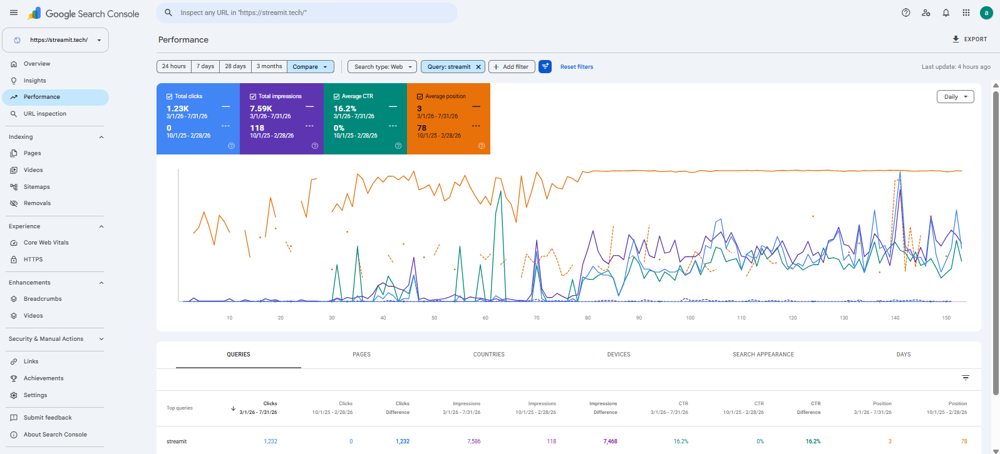
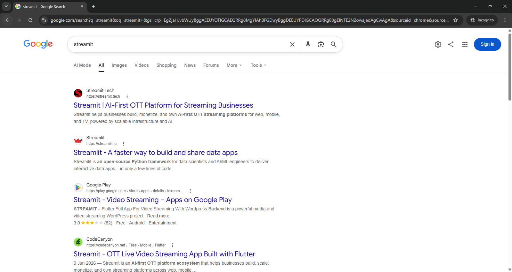
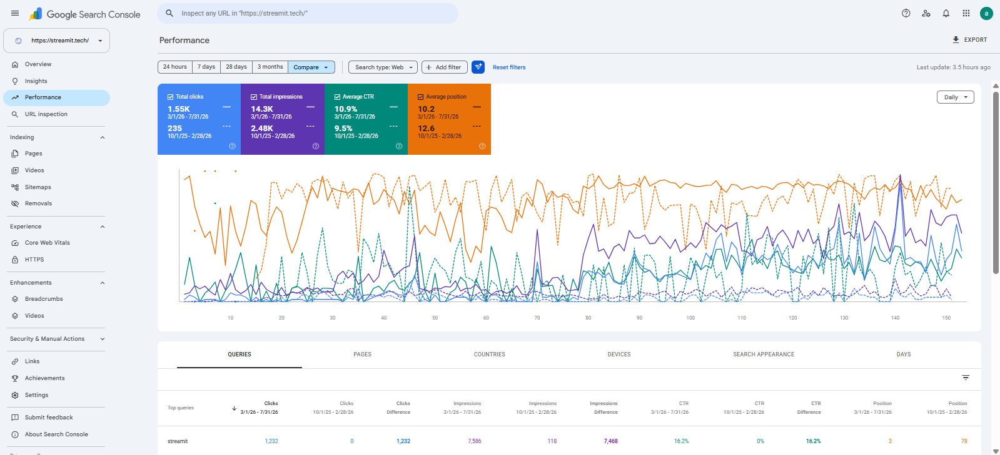
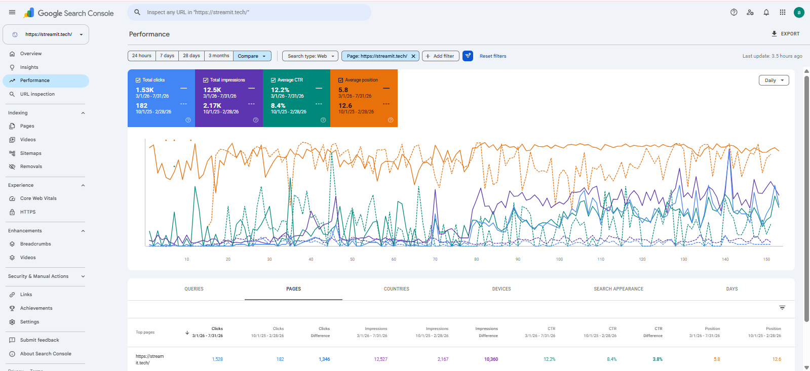
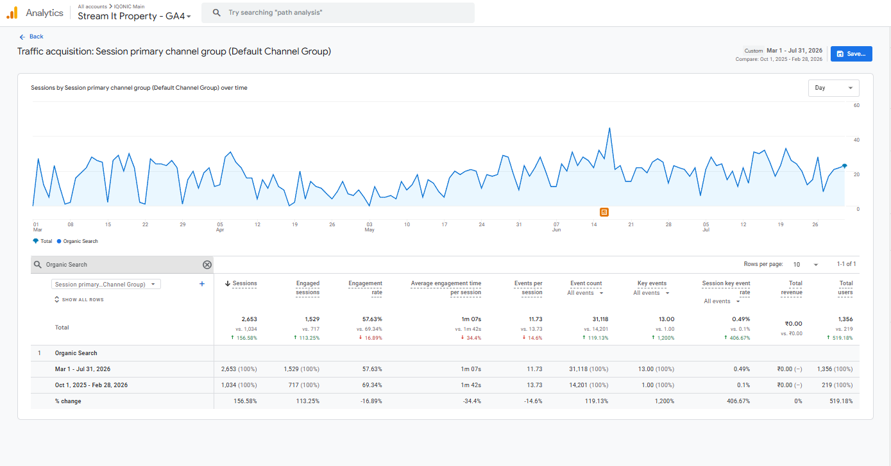

The Starting Point
Streamit was not originally built as a search-focused business website. Its main purpose was to showcase and preview Streamit's Laravel products. The website had only a few main pages, and those pages mostly explained product features rather than addressing the search intent of founders, creators, media companies, or businesses looking to launch streaming platforms. Organic traffic was extremely limited and primarily branded. The website had little authority because the domain itself was new. SEO had not yet been developed across any of the three major areas: On-page SEO Technical SEO Off-page SEO The challenge was therefore much bigger than improving a few rankings. Streamit needed an entirely new SEO foundation and a clearer identity in search.
The Initial SEO Problems
My audit identified problems across almost every part of the website.
Technical SEO
Several technical issues were limiting discoverability and performance:
- Unnecessary URLs included in the sitemap
- AI crawlers blocked through robots.txt
- Pages appearing under Crawled – currently not indexed
- Pages appearing under Discovered – currently not indexed
- Missing structured data
- Weak mobile and desktop performance
- Some canonical issues
- Some redirect issues
Many indexing problems were connected to another issue: page quality. Several pages simply did not contain enough useful content for search engines to consider them valuable.
On-Page SEO
The on-page foundation was equally weak. There was:
- No structured keyword targeting
- Thin page content
- Missing or weak image alt text
- Incorrect heading hierarchy
- Generic meta titles and descriptions
- Almost no useful internal linking
- Limited search intent optimization
The existing pages explained the product but were not designed around what potential customers were actually searching for.
Content
Streamit was publishing approximately one blog every day. The publishing frequency looked strong on paper. The SEO value was not. Many blogs:
- Had little or no keyword research
- Targeted random topics
- Contained thin content
- Had weak internal linking
- Generated little traffic
- Were not getting indexed
The website did not need more content. It needed better reasons for each piece of content to exist.
Off-Page SEO
Streamit had some backlinks, but many placements were not strongly relevant to the OTT or streaming industry. Anchor selection was also generic. For a new domain competing against established streaming technology companies, this was not enough to build meaningful topical authority.
My Role
I led SEO strategy and execution for Streamit. My responsibilities included:
- SEO audits
- Keyword research
- Competitor analysis
- Website positioning
- Website architecture
- Landing-page strategy
- Full-page content rewrites
- Blog strategy
- Technical SEO
- Internal linking
- Backlink strategy
- AI search optimization
- Content briefs
- Developer coordination
- Designer coordination
- Content-team management
- Approvals
- Monthly SEO reporting
I owned the project from strategy through implementation and performance tracking.
Starting With the Technical Foundation
Before expanding the website, I first focused on making sure search engines could properly crawl, understand, and process it. I performed technical audits using tools such as Screaming Frog, Google Search Console, PageSpeed Insights, Semrush, and other SEO validation tools. Working with the development team, I helped implement improvements including:
- Sitemap cleanup
- Robots.txt updates
- AI crawler accessibility
- Relevant structured data
- Heading hierarchy fixes
- Speed improvements
- Redirect corrections
- Canonical fixes
- Structured data validation
Different schemas were implemented depending on page purpose. For example: Homepage → Organization schema Solution pages → Service schema Relevant pages → FAQ and Breadcrumb schema The technical work created the foundation needed before significantly expanding the site's content and architecture.
Repositioning Streamit
This became one of the most important parts of the project. Originally, Streamit looked primarily like a website supporting products available through marketplaces. But the business itself had a much broader offering. The SEO positioning therefore shifted toward: Custom OTT platform provider rather than simply: OTT product or template preview This change influenced the entire website. Instead of only explaining products, the site began addressing questions around:
- OTT platform development
- Streaming websites
- Mobile streaming apps
- TV streaming applications
- Custom OTT solutions
- Infrastructure
- Industry-specific streaming platforms
- Platform ownership
- Monetization
- Scalability
- AI-driven streaming capabilities
The website architecture and content strategy were rebuilt around this broader positioning.
Solving the Streamit Brand Search Problem
The branded query became one of the most interesting challenges in the project. Searching for “streamit” did not initially surface streamit.tech prominently. Several other properties were appearing before the main website:
- Streamit products on ThemeForest
- Streamit products on CodeCanyon
- Streamit applications
- Other Streamit ecosystem properties
Google was also frequently interpreting “Streamit” similarly to “Streamlit.” At one point, the main Streamit website itself appeared several pages deep in search results. The challenge was therefore not simply ranking a homepage. Google needed clearer signals about which website represented the main Streamit brand.
Consolidating the Streamit Ecosystem
We strengthened the relationship between streamit.tech and other Streamit properties. Where possible, product listings, applications, marketplace pages, and other Streamit properties were updated to clearly reference streamit.tech as the main website for the Streamit ecosystem. At the same time, the website itself was repositioned and expanded to better represent the overall business. This combination strengthened Google's understanding of the main brand property.
The result
For the query:
“streamit”
Clicks 0 → 1,232 Impressions 118 → 7,586 Average Position 78 → 3 Impressions increased by approximately 6,329%. Later SERP checks showed streamit.tech reaching the #1 position for the Streamit brand query.


Building the Keyword Strategy
Because Streamit needed both brand visibility and non-branded growth, I developed a keyword strategy around both. The homepage was mapped around:
Primary Keyword
- Streamit
Secondary Keywords
- OTT platform provider
- OTT platform providers
- OTT solution provider
- OTT solution providers
- OTT platform solution
- end-to-end OTT solution
Supporting Keywords
- OTT platform development
- OTT platform development company
- create OTT platform
- create your own OTT platform
- build OTT platform
- custom OTT solutions
The objective was to maintain strong brand relevance while simultaneously helping Google understand what Streamit actually offered.
Mapping Keywords Across the Website
Keyword research combined:
- Semrush
- Ubersuggest
- Competitor analysis
- Non-branded competitor rankings
- Search volume
- Competition
- Search intent
Each major solution page received its own primary and secondary keyword set. This helped avoid unnecessary keyword overlap and reduced the risk of different pages competing against each other. Instead of trying to rank every page for “OTT platform,” pages were mapped around the specific problem or solution they addressed.
Rebuilding the Website Architecture
The original website contained only a small number of product-focused pages. As the SEO strategy developed, the website expanded into a much broader search ecosystem. I worked on:
- Homepage
- Core solution pages
- New solution pages
- Industry pages
- Product positioning
- Feature-related content
- Blog clusters
- Internal linking between these sections
Approximately 30 important landing and solution pages were rewritten and optimized. For these pages, I worked on:
- Keyword targeting
- H1/H2 structure
- Content
- Metadata
- FAQs
- Internal linking
- Search intent
- CTA positioning
- Structured data
- Content depth
This was not simply a content refresh. It changed how the website represented the Streamit business to both users and search engines.
Creating Industry-Specific SEO Pages
Competitor research showed that established OTT companies were targeting individual industries through dedicated landing pages. This created a clear opportunity. I developed and optimized industry-specific content for:
- Entertainment
- Media & Broadcast
- Sports
- Beauty
- Content Creators
- E-learning
- Fitness
- Spirituality
- Podcasting
Rather than duplicating one template across industries, each page was developed around different:
- Keywords
- Audience problems
- Platform requirements
- Features
- Monetization models
- Use cases
One early example was the Entertainment industry page, which generated approximately 1,500 impressions within four months. For a relatively young domain, these impressions showed that the expanded non-branded architecture was beginning to gain visibility.
Transforming the Blog Strategy
The original content strategy prioritized publishing frequency. I changed the focus toward search opportunity. Instead of publishing random daily topics, blog planning began using:
- TOFU / MOFU / BOFU intent
- Keyword clusters
- Competitor content gaps
- Search intent
- Existing impressions
- Topic relevance
- Internal-link opportunities
Because traffic growth was the first priority, informational content played a major role.
Updating and Cleaning Existing Content
I did not automatically rewrite every old blog. Existing articles were evaluated using search data. The priority was:
First
Blogs already receiving impressions
Second
Blogs targeting keywords with meaningful potential
Third
Content with no useful visibility or keyword opportunity Low-value content in the third category could then be redirected or removed instead of being maintained indefinitely. During the project: Approximately 40 existing blogs were rewritten or updated and Around 25 new blogs were published
Building Content Clusters
Some of the strongest content opportunities came from comparison and alternative searches. Examples included topics such as: Streamit vs Muvi and Vimeo OTT alternatives These articles helped target users already evaluating streaming platforms. I developed clusters around:
- Platform comparisons
- OTT platform alternatives
- Streaming platform education
- Custom OTT development
- Streamit positioning
Another important content cluster helped reinforce that Streamit was not simply a theme or template. The broader content ecosystem consistently explained Streamit's role as a custom OTT platform and development provider. This supported both non-branded visibility and the larger brand-positioning strategy.
Building a Strong Internal Linking Structure
Internal linking had barely been used on the original website. I developed clearer relationships between major page groups.
Blog
→ Solutions → Industries → Homepage → Relevant blogs
Homepage
→ Core solutions
Solution Pages
→ Homepage → Relevant industry pages
Industry Pages
→ Homepage → Relevant solutions This helped search engines discover deeper pages while making the relationship between Streamit's topics clearer. Internal linking also became one of the factors that helped improve indexing across pages that had previously struggled to enter Google's index.
Improving Indexing
Some pages were appearing in Google Search Console under: Crawled – currently not indexed and Discovered – currently not indexed Rather than treating this as purely a crawling issue, I improved the underlying page quality. The strategy included:
- Increasing useful content depth
- Improving keyword relevance
- Strengthening internal links
- Fixing technical issues
- Creating clearer page relationships
- Improving website architecture
As the site became more useful and interconnected, indexing improved. This reinforced one of my biggest learnings from both Streamit and other SEO projects: Technical fixes matter, but strong content and internal linking often solve problems that look purely technical at first.
Improving Off-Page SEO
Streamit's backlink strategy also changed. The website already had some links, but relevance and anchor selection needed improvement. I shifted the strategy toward:
- More niche-relevant websites
- Better contextual placements
- More relevant anchor selection
- Guest-post opportunities
- Link partnerships
Approximately 80 backlinks were built during the project through guest posts and link exchanges. The goal was to support Streamit's growing topical relevance rather than simply increase the number of referring links.
Competitor Research
I regularly studied established OTT and streaming platforms including:
- VPlayed
- Muvi
- Dacast
- Uscreen
- Vimeo OTT
Competitor research helped identify:
- Non-branded keyword opportunities
- Industry landing-page opportunities
- Blog topics
- Comparison searches
- Alternative searches
- Content gaps
The goal was not to copy competitors. It was to understand where search demand already existed and where Streamit could build stronger or more relevant pages.
Preparing Streamit for AI Search
The SEO strategy also expanded beyond traditional search results. I worked on improving how easily AI-driven search systems could understand and reference Streamit's content. This included:
- FAQs
- Structured content
- Entity clarity
- Schema
- Brand citations
- Informative guides
- Comparison content
- Brand mentions
According to Semrush AI visibility reporting, Streamit later recorded: 16 prompts triggering AI responses mentioning the brand 125 AI responses citing Streamit as a source 115 Streamit pages appearing as citations in AI-generated answers These figures represent third-party AI visibility reporting rather than Google Search Console data.
Overall SEO Results
Comparing the selected Google Search Console periods:
Organic Clicks
235 → 1,550 Increase: +1,315 clicks Growth: +559.6% Organic clicks grew to approximately 6.6× the previous level.
Search Impressions
2,480 → 14,300 Increase: +11,820 impressions Growth: +476.6% Search visibility grew to approximately 5.8× the previous level.
CTR
9.5% → 10.9% Improvement: +1.4 percentage points
Average Position
12.6 → 10.2 Improvement: 2.4 positions

Homepage Growth
The Streamit homepage showed particularly strong improvement.
Clicks
182 → 1,528 Increase: +1,346 clicks Growth: +739.6% The homepage generated approximately 8.4× its previous organic clicks.
Impressions
2,167 → 12,527 Increase: +10,360 impressions Growth: +478.1%

Another Brand Search Win
The variation:
“stream it”
also improved.
Clicks
0 → 54
Impressions
1 → 433
Average Position
46 → 16.8 This provided another signal that Google's understanding and visibility of the Streamit brand was strengthening.
Brand Growth vs Non-Branded Growth
A significant share of the initial growth came from solving Streamit's brand-search problem. That was intentional. For a young website whose own main domain was barely visible for its brand name, establishing the correct primary brand property was the first priority. At the same time, new solution pages, industry pages, comparison content, educational blogs, and keyword clusters started building the foundation for broader non-branded visibility. Streamit therefore moved through two stages: First: establish the brand Then: expand what the brand can rank for
Business Impact
Organic visibility was not the only area that improved. Lead and conversion performance also improved during the project. However, commercial and conversion figures are confidential and are therefore not included in this portfolio.
Proof of Work
The final portfolio version can show direct evidence beside the relevant result rather than placing all screenshots in one gallery.
Overall Organic Growth
GSC Screenshot 235 → 1,550 clicks 2,480 → 14,300 impressions
Brand Keyword
GSC Screenshot “streamit” Position 78 → 3 during the comparison period
Current Brand SERP
Google SERP Screenshot streamit.tech ranking #1 for “streamit”
Homepage Growth
GSC Screenshot 182 → 1,528 clicks
Organic User Growth
GA4 Screenshot This makes each performance claim immediately verifiable.

Tools & Platforms Used
- Google Search Console
- Google Analytics
- Semrush
- Ubersuggest
- Screaming Frog
- PageSpeed Insights
- Ahrefs
- SEO Meta in 1 Click
- Schema Validation Tools
The Most Difficult Part
The hardest part of the project was not simply increasing traffic. It was changing Google's understanding of what Streamit represented. The main website originally existed behind Streamit's own marketplace products and other properties for its branded query. At the same time, the site itself looked more like a product preview than an OTT service provider. Solving this required several SEO areas to work together:
- Brand consolidation
- Website positioning
- Content expansion
- Technical SEO
- Internal linking
- External brand signals
- Website architecture
Seeing streamit.tech eventually become the primary result for the Streamit brand became the clearest sign that those signals were working together.
What I Learned
One experiment that produced particularly strong results was adding greater depth to solution and industry pages instead of keeping them short. I also significantly expanded internal linking across the website. Both changes helped improve page discovery, indexing, topical relationships, and overall search visibility. The project reinforced a principle I strongly believe in: Classic SEO fundamentals still win when they are applied consistently and strategically. Technical SEO alone was not enough. Content alone was not enough. Backlinks alone were not enough. The results came from making all of those parts support the same website strategy.
My Biggest Takeaway
Streamit started as a young domain with very little organic visibility and a website built primarily to preview products. Six months later, it had a much clearer identity: A website structured around OTT solutions, industries, products, educational content, and a broader streaming business offering. For me, this project represents more than traffic growth. It demonstrates the kind of responsibility I am comfortable taking on: Taking ownership of an SEO project end to end, identifying what the website needs, building the strategy, coordinating the team, executing the plan, and measuring what happens next.